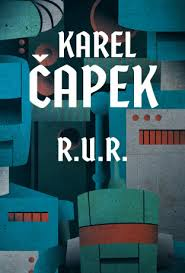

Autor: Karel Čapek
Literární druh: drama
Žánr: sci-fi drama
Období: meziválečná literatura
Místo děje: továrna R.U.R.
Rok vydání: 1920

Hlavním tématem je vytvoření umělých dělníků a jejich následný odpor proti lidem. Dílo se zabývá také technickým pokrokem, zneužitím vědy, prací a otázkou, co znamená být člověkem.
Ředitel továrny R.U.R. Věří v technický pokrok a ve velkou výrobu robotů.
Přichází do továrny, aby pomohla robotům. Později se stane Dominovou manželkou.
Vědec, který pracuje na vývoji robotů a snaží se jim dát větší citlivost.
Vedoucí stavebních prací v továrně. Jako jeden z mála lidí má k robotům respekt.
Robot, který se bouří proti lidem a stává se jedním z vůdců robotů.
V továrně R.U.R. se vyrábějí umělí dělníci, kterým se říká roboti. Roboti vypadají jako lidé, ale jsou vytvořeni pouze pro práci a nemají mít vlastní city.
Do továrny přijíždí Helena Gloryová, která chce robotům pomoci. Zjistí, že roboti jsou vyráběni ve velkém množství a postupně nahrazují lidské pracovníky.
Roboti se postupně začnou měnit a získávají vlastní myšlení a city. Začnou si uvědomovat, že jsou využíváni lidmi. Nakonec se proti lidem vzbouří.
Roboti zaútočí na továrnu a zabijí téměř všechny lidi. Lidé se snaží najít způsob, jak roboty zastavit, ale jejich výroba je nakonec zničena.
Alquist jako jediný přeživší člověk dostane od robotů úkol, aby znovu objevil způsob, jak roboty vyrábět. Při své práci zjistí, že dva roboti, Primus a Helena, k sobě začali cítit lásku.
Alquist pochopí, že právě láska může být začátkem nového života. Primus a Helena proto odcházejí jako nový Adam a Eva a lidstvo tak dostává naději na pokračování.
Dílo varuje před nekontrolovaným technickým pokrokem a snahou člověka nahradit lidskou práci stroji. Ukazuje také, že bez citů, svobody a odpovědnosti může být pokrok pro lidstvo nebezpečný.